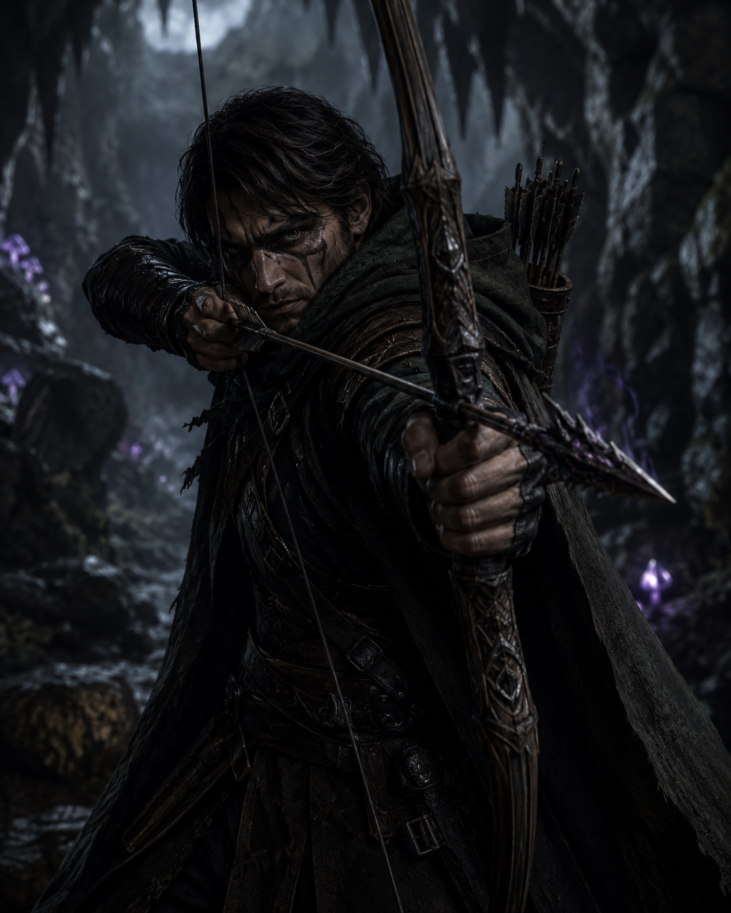

Human | Ranger (Gloomstalker) | Neutral

Generally...
Ideal:what what
Bond:what what
Flaw:what what
Delon Striet was never born into anything so gentle as a family—only into absence. By the time he was old enough to remember faces, he knew only the hard edges of streets, stolen warmth in alleyways, and the constant calculation of where his next meal might come from. A boy of quiet instincts and sharper survival than most grown men, he learned early how to move unseen through crowds and vanish before trouble could name him. That talent might have led him into a life of crime or an early grave, had he not been discovered by a wandering master ranger named Narmus Sting — an aging adventurer once bound to service under the future king, now traveling the realm in uneasy retirement. The Narmus saw something in Delon that others overlooked: patience in stillness, awareness in shadow, and the unnerving way he seemed to listen to the world more than speak to it.
Under the Narmus’s tutelage, Delon was shaped into something far more dangerous than a street rat—taught to read forests like maps, to track by instinct as much as sign, and to embrace the dark rather than fear it. But that life too was not meant to last. During an expedition through the borderlands north of West-Over-Farthing, the ground began splitting and shifting in violent waves. In the chaos, Delon lost his footing at the edge of a widening chasm and began to fall into the darkness below. Without hesitation, his mentor Narmus Sting threw himself forward, catching Delon and hauling him back with desperate strength—but in doing so, he gave the earth what it demanded. The Narmus Sting was pulled over the edge in Delon’s place, vanishing into the broken stone and collapsing world beneath, as Delon was left clinging to the shattered edge, alive only because the man who taught him refused to let him die.
In the aftermath, with Narmus certainly dead, with Impiltur fractured and unrecognizable, Delon Striet returned to a world just as broken as the land that shaped it. He carries forward his mentor’s teachings without the man himself to anchor them, a wayfarer with no true home and no remaining tether except memory and skill. Now, tendays later, an unexpected summons arrives from Lyrabar: a formal invitation to a royal ball, bearing the king’s seal and an unsettling familiarity, as though the crown remembers not only the ranger’s service before the quake—but the boy who survived what the world itself tried to swallow.